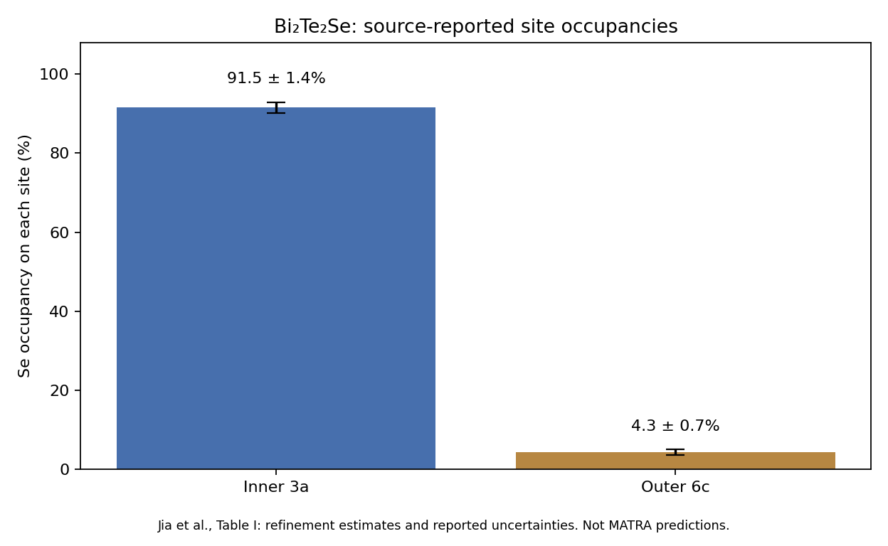
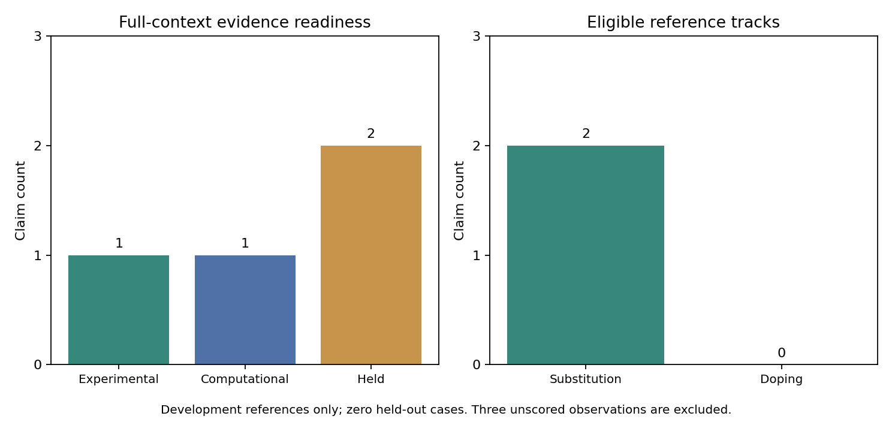

Research benchmark remains incomplete. 143 software tests passed. One experimental and one computational substitution reference are eligible; zero doping and zero held-out cases. These counts are not accuracy.


All 23 assertions remain withheld at their original broad scope. Unknown does not mean false.
| case_id | track | target | candidate | status | next_evidence_needed |
|---|---|---|---|---|---|
| BM-P01 | substitution | Ga | Al | withheld | Separate Al and In primary experimental cases; concentration, phase and Ga-site evidence. Peelaers PDF is a proof copy and its published erratum needs review before importing numerical stability/band-gap claims. |
| BM-P01 | substitution | Ga | In | withheld | Separate Al and In primary experimental cases; concentration, phase and Ga-site evidence. Peelaers PDF is a proof copy and its published erratum needs review before importing numerical stability/band-gap claims. |
| BM-P02 | substitution | Ga | Al | withheld | Primary AlGaN and InGaN samples with specified wurtzite phase, Ga site and composition; the Ambacher review alone is insufficient. |
| BM-P02 | substitution | Ga | In | withheld | Primary AlGaN and InGaN samples with specified wurtzite phase, Ga site and composition; the Ambacher review alone is insufficient. |
| BM-P03 | substitution | Mo | W | withheld | Primary Mo-W sulfide passage matching layer count, local coordination and concentration; do not assign bulk Wyckoff sites to a monolayer. |
| BM-P04 | substitution | S | Se | withheld | Full Gong primary paper and sample-specific S/Se site, layer form and concentration; abstract does not certify the whole asserted range. |
| BM-P05 | substitution | Ti | Zr | withheld | Separate BaTiO3 Zr, Sn and Hf structural cases, each with sample composition, phase and Ti-site evidence; cited DOI is unrelated. |
| BM-P05 | substitution | Ti | Sn | withheld | Separate BaTiO3 Zr, Sn and Hf structural cases, each with sample composition, phase and Ti-site evidence; cited DOI is unrelated. |
| BM-P05 | substitution | Ti | Hf | withheld | Separate BaTiO3 Zr, Sn and Hf structural cases, each with sample composition, phase and Ti-site evidence; cited DOI is unrelated. |
| BM-P06 | substitution | Ba | Sr | withheld | Independent consistent Ba/Sr or Ba/Ca structural reference with exact phase and composition; neutron lead has unresolved wording/symmetry conflicts. |
| BM-P06 | substitution | Ba | Ca | withheld | Independent consistent Ba/Sr or Ba/Ca structural reference with exact phase and composition; neutron lead has unresolved wording/symmetry conflicts. |
| BM-P07 | substitution | Ti | Zr | withheld | Separate SrTiO3 Zr and Hf primary structural cases; repair unrelated database identifier and verify B-site occupancy/composition. |
| BM-P07 | substitution | Ti | Hf | withheld | Separate SrTiO3 Zr and Hf primary structural cases; repair unrelated database identifier and verify B-site occupancy/composition. |
| BM-P08 | substitution | Sr | Ba | withheld | Separate Sr/Ba and Sr/Ca cases with phase-temperature and concentration evidence; mixed host/dopant studies cannot prove the unrestricted binary substitution claim. |
| BM-P08 | substitution | Sr | Ca | withheld | Separate Sr/Ba and Sr/Ca cases with phase-temperature and concentration evidence; mixed host/dopant studies cannot prove the unrestricted binary substitution claim. |
| BM-P09 | substitution | Pb | Sn | withheld | Cs-only Pb/Sn iodide primary alloy case with composition and actual alpha/beta/gamma phase at a specified temperature; exclude organic-cation examples and phase-mixed samples. |
| BM-P10 | substitution | Bi | Sb | withheld | Read Poudel full primary passages for actual Bi/Sb composition and cation-site structural evidence; transport improvement alone does not establish every asserted site/range. |
| BM-P11 | substitution | Te | Se | withheld | New Bi2Te2Se scope is documented; broad full-join phase/stability assertion still requires independent composition- and preparation-specific evidence. |
| BM-S01 | doping | Ga | Si | withheld | Full Si-doped beta-Ga2O3 sample concentration, Ga-site assignment and electrical activation evidence; corrected Villora abstract is not full context. |
| BM-S02 | doping | Ga | Sn | withheld | Sn XAS supports octahedral preference, but obtain exact concentration tied to the XAS single crystal; do not substitute carrier density for dopant density. |
| BM-S03 | doping | Ga | Mg | withheld | Full Mg-GaN sample concentration, Mg-site and treatment-dependent activation evidence; classic p-type abstract does not certify full site context. |
| BM-S04 | doping | Ti | Nb | withheld | Nb-STO concentration and role are supported in selected sources; independent site occupancy and exact phase/temperature context still pending. |
| BM-S05 | doping | Mo | Re | withheld | Re-MoS2 monolayer occupancy supported; resolve phase/form scope and retain source concentration convention and adatom population separately. |